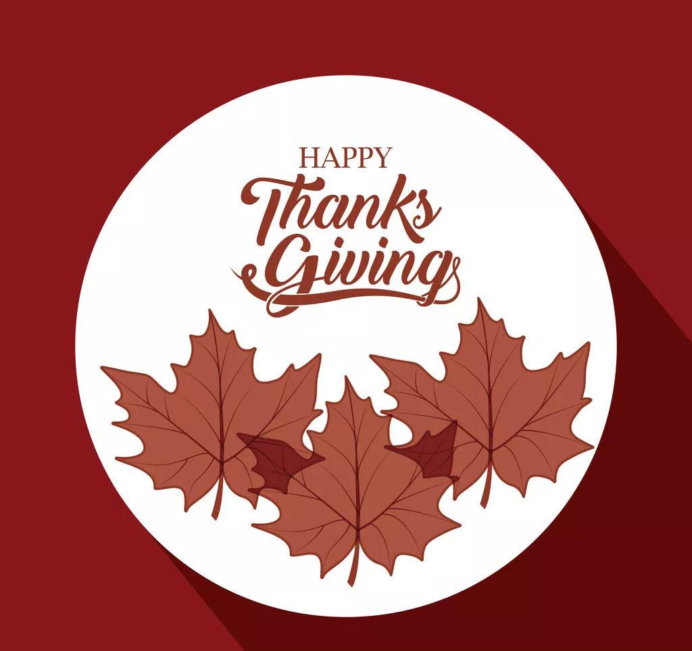

感恩节（Thanksgiving Day）是美国和加拿大共有的节日，原意是为了感谢上天赐予的好收成、感谢印第安人的帮助。
初时感恩节没有固定日期，由美国各州临时决定。直到美国独立后的1863年，林肯总统宣布感恩节为全国性节日。
1941年，美国国会正式将每年11月第四个星期四定为“感恩节”。感恩节假期一般会从星期四持续到星期天。
这些关于“感恩节日”的冷知识你又了解多少呢？
感恩节
冷知识
01
北美感恩节起源加拿大，美国是“翻版”的。
1578年，英国探险家法贝瑟试图探索一条从大西洋前往东方的航线，但是没有成功。最终，他在今天加拿大的纽芬兰省建立了一个定居点，并举行了一个庆祝生存和收获的宴餐。
这一次被认为是北美的第一个感恩节，比清教徒“五月花号”首次抵达美国早了大约40年。
02
由于加拿大较早进入冬天，收获的日期较早，因此早期加拿大的感恩节日期也较早。
加拿大的感恩节为每年10月的第二个星期一。
美国的感恩节则为每年11月的第四个星期四。

03
火鸡跟土耳其重名（Turkey），不是没有原因的
传说，在中世纪，有一种外形和火鸡十分相似的家禽被从土耳其引进到了欧洲，当时被叫做“Turkey bird”。
等到欧洲人在美洲大陆上第一次发现火鸡时，他们懒得去一个新名字，就直接叫它们“Turkey”了。（火鸡内心OS:我就不配有姓名）
04
在美国，美国总统每年都会在感恩节这天「赦免」一到兩隻火鸡，這些火雞將被饲养到老死，而永不宰殺。
虽然被赦免的火鸡可以“免于一死”不被烹食，但它们其中的大多数仍旧难活长久。这是因为，火鸡非野生动物，且体型很胖，很不健康，因此很快就会死去。
感恩是我们人生中很重要的一课。
一年一度的感恩节提醒着我们，对身边的人和事要充满感激。
而在这一天我们可以说出平时羞于表达的感谢。